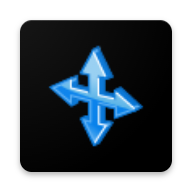

FastMediaSorter v2Перетворіть будь-який Android-планшет на красиву завжди ввімкнену цифрову фоторамку. Стримінг з домашнього ПК (SMB) або хмари — без зайняття локальної пам'яті. Додайте музику, налаштуйте інтервал.
Встановіть на Android-автомагнітолу. Віртуальний ресурс Вся музика — миттєвий доступ до всієї колекції без налаштування. Кнопки керма працюють через фоновий аудіосервіс — без дотику до екрана.
Дивіться серіали з ПК або хмари на телефоні/VR. Не треба копіювати — просто натисніть Play, і наступна серія запуститься сама.
Наведіть лад у завантаженнях на пристрої або віддаленому ПК. Налаштуйте кнопки та розкладайте файли по папках одним дотиком.
Автоматично копіюйте нові фото з камери на домашній комп'ютер через Wi-Fi (SMB). Налаштуйте розклад — резервна копія збережеться вночі без вашої участі.
Автоматично видаляйте застарілі або вже розібрані файли з Завантажень за розкладом. Порядок у сховищі без ручної роботи.
Нові можливості та виправлення з попереднього релізу: діалог «Управління», Зберегти кадр, Друк, DTS-аудіо, стабільність SMB та багато іншого.
Почніть за 5 хвилин! Простий покроковий посібник для початківців з діаграмою сенсорних зон та практичними порадами.
25+ питань по роботі з файлами, налаштуванню мережі, Quick Sort, сенсорним зонам та багато іншого.
Рішення для 15+ типових проблем: підключення, продуктивність, операції з файлами та збої програми.
6 покрокових посібників для реальних випадків (фоторамка, музика в авто, домашній кінотеатр, NAS тощо) плюс довідкові інструкції з усіх функцій. Для початківців.
Доступ до всіх скомпільованих APK з Google Drive. Включає варіанти Standard, Lite, Photos та Legacy.
Повний посібник з встановлення, огляд функцій та інструкції з використання для всіх підтримуваних типів сховищ.
Детальна технічна документація з описом архітектури, компонентів та деталей реалізації.
Реалізація Clean Architecture з патерном MVVM, Hilt DI та поясненням модульної структури.
Визначення ключових термінів та концепцій, що використовуються в проєкті (Ресурси, Призначення тощо).
Поточні завдання розробки, плановані функції, останні виправлення та відстеження відомих проблем.
Комплексні тестові випадки для всіх функцій, включаючи мережеві протоколи та граничні випадки.
Повний реєстр усіх користувацьких функцій: переглядачі, плеєри, файлові операції, мережеві джерела, хмара, Wear OS та інше.
Перегляньте коротке відео про FastMediaSorter v2 у дії на YouTube.
Доступ до вихідного коду, повідомлення про проблеми, участь у розробці та відстеження активності проєкту.
Завантажте останні збірки APK з історією версій та примітками до випусків.
Повідомте про помилки, запитайте функції або отримайте допомогу з встановленням та налаштуванням.
Детальна інформація про обробку даних, дозволах, практиках безпеки та захисті конфіденційності користувачів.
Користувацька угода, умови використання, відмова від відповідальності та юридична інформація.
Інформація про використані бібліотеки (SMBJ, epub4j), ліцензії (LGPL-2.1) та вихідний код.
Перегляньте коротке відео про FastMediaSorter v2 у дії на YouTube.